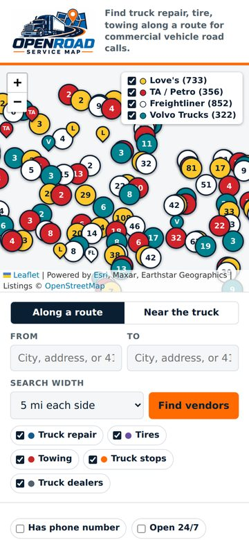

Project Lead · Oct 2026 – Present
OpenRoad Service Map
A free website for finding truck repair, tires, and towing along a route.
- Took a problem I deal with every day at work, finding a truck shop near a breakdown, and turned it into a free website anyone can use.
- Built it with an AI coding assistant over 100+ updates: I decided what it needed to do, checked every change, tested it on computer and phone, and put it online with GitHub Pages.
- Shows 3,600+ truck service locations from 12 companies, sorted by mile marker along the route, with tap-to-call phone numbers. The locations update on their own every week.
- Added a shared Post Board (beta) with a PIN where a fleet team can track trucks, trailers, work orders, and repair status in one place.